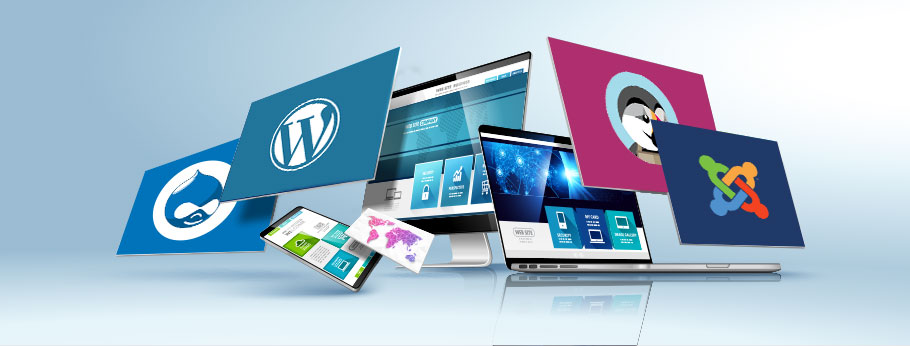

Explora qué son los CMS, cómo funcionan y sus ventajas y desventajas.
Un CMS es una aplicación de software que se encarga de la infraestructura básica de creación de sitios web. Con un CMS, los usuarios pueden centrarse en las áreas front-end de la creación de sitios web, como la personalización del diseño del sitio web y la gestión de contenidos.
Para comprender cómo funciona un sistema de gestión de contenidos, primero debes saber qué compone y cómo crear una web desde cero. Un sitio web consta del front-end (lo que ve el usuario) y el back-end (base de datos y funcionalidad).
El front-end usa HTML, CSS y JavaScript. El back-end usa lenguajes como PHP, Ruby, Java y Python.
Antes de utilizar un CMS, lo primero que necesitas es un hosting y dominio. El hosting es un servicio que te permite almacenar todos los archivos, contenido y bases de datos necesarias para tu sitio web. Asegúrate de que el proveedor de alojamiento sea compatible con tu CMS elegido.
Por ejemplo, Hostinger tiene planes de hosting para WordPress, diseñados específicamente para sitios web de WordPress. Siéntete libre de revisar las diferentes soluciones de alojamiento web para CMS de Hostinger y elige la más adecuada para tu plataforma CMS.